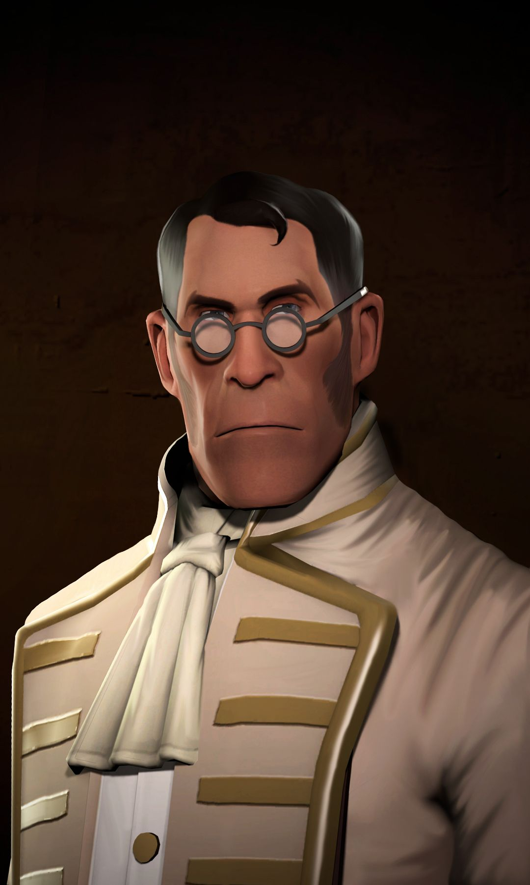
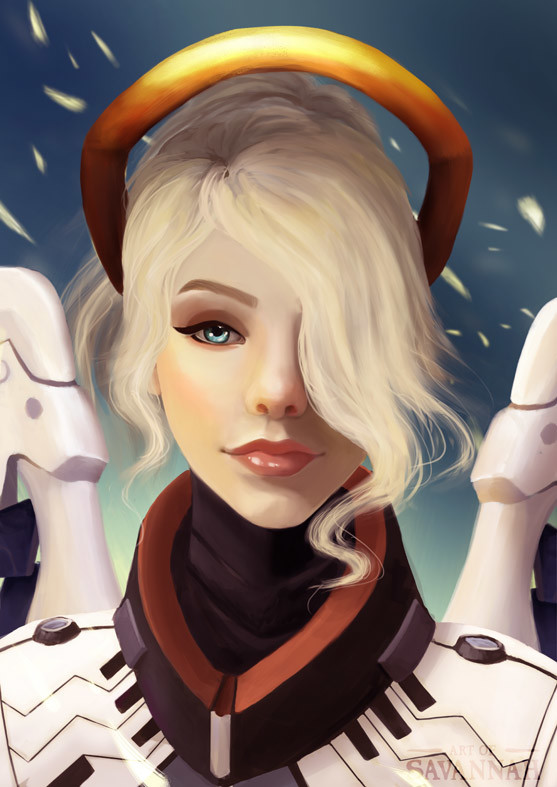

(On The Left) The Medic is a Teutonic man of medicine. While he may have a tenuous adherence to medical ethics, he is nonetheless the primary healing class of the team. Although the Medic's Syringe Gun and Bonesaw aren't the most excellent weapons for direct combat, he can typically still be found near the front lines, healing wounded teammates while trying to stay out of enemy fire.
(On The Right) Mercy is one of the heroes in Overwatch. She is a nanobiologist and a field medic who always stays at the frontline of wars and crises around the world to heal the wounded and imperiled. Mercy’s Valkyrie Suit helps keep her close to teammates like a guardian angel so Mercy can heal, resurrecting or strengthening them with the beams emanating from her Caduceus Staff.